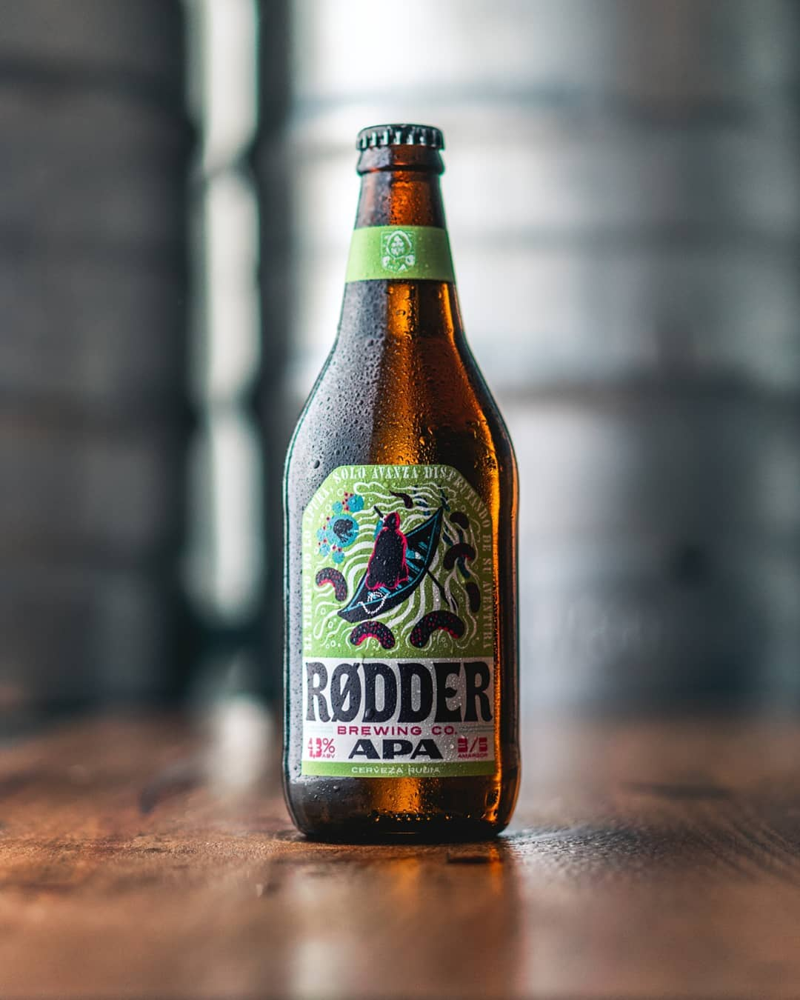
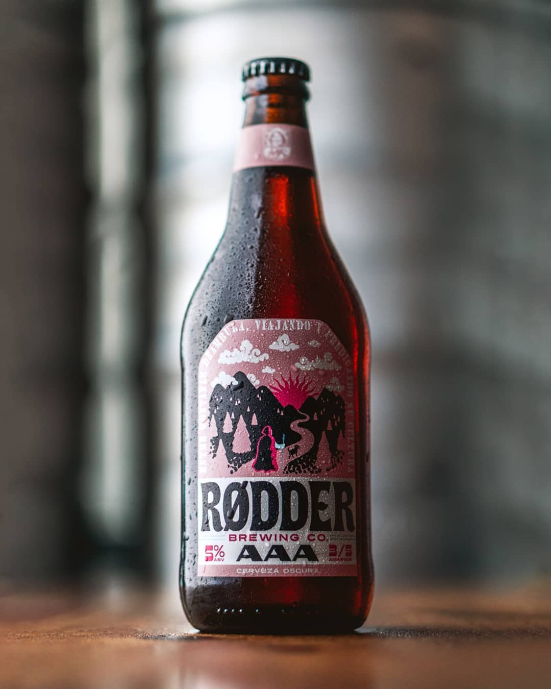

AMERICAN PALE ALE
Una cerveza americana rubia, refrescante y lupulada balanceada para ser menos amarga y de mayor tomabilidad que una IPA. En aroma predomina el lúpulo con perfiles cítricos y frutados.
*Tambien disponible en barriles de 50L, 30L o 20L

AMERICAN AMBER ALE
Cerveza de color ambar con maltosidad moderada, en sabor predomina el gusto a caramelo y malta. En aroma presenta nota a lúpulo en las que destaca perfiles resinosos y frutados.
*Tambien disponible en barriles de 50L, 30L o 20L

PORTER
Cerveza color marrón oscuro de alta tomabilidad. Predomina el sabor a malta destacandose el café, chocolate, toffe y tostado. Aroma intenso a café y chocolate.
*Tambien disponible en barriles de 50L, 30L o 20L